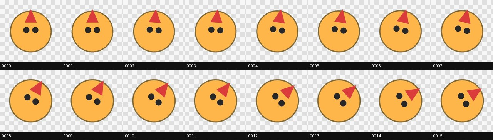

Running oil-motion without an API key
What this is
oil-motion is an agent skill, not a JS library. My own notes had it wrong: they called it "a lightweight animation library," GSAP-adjacent. It's actually paid AI video generation (ZenMux minimax-h3) producing the motion between confirmed keyframes, then a deterministic pipeline that cleans, packs, and wires that footage to scroll, pointer, drag, touch, or device-orientation input.
I don't have a ZenMux key set up, so I ran only the deterministic half, on a synthetic test clip I built myself (rotating mascot, chroma-key green, PIL + ffmpeg). That's not what the tool is designed for. It's a stand-in to exercise the tooling; nothing here reflects AI-generated motion quality.
What I ran
| Step | Command | Result |
|---|---|---|
| Extract, key, analyze, pack | motion_pipeline.py build source.mp4 build/ --key 00FF00 --cell-width 160 --cell-height 160 | 76 frames extracted. QA flagged 38 as near-duplicate, all correct (see appendix) |
| Pick a delivery format | motion_budget.py --frames 76 --display 160x160 --dpr 2 --driver pointer --parameter-space circular --time-control scrub --background-owner page | Selected alpha-atlas, reason random-access-fits-atlas-budget, matching the README's own decision table |
| Lock a pilot | production_gate.py approve-pilot --first-frame ... --last-frame ... --video ... --decision pass | Approval file written with SHA-256 hashes of each artifact |
| Break the pilot on purpose | rotate frame_00001.png by 3°, rerun production_gate.py check-pilot | firstFrame 工件已变化，Pilot 批准失效 (artifact changed, approval invalidated). Exit 1 |
| Build the interactive page | create_explainer.py --atlas-url motion.webp --manifest motion.json --driver pointer-angle | The demo above |
The duplicate frames from the first step, visually:

Each pair is pixel-identical. That's the fps mismatch explained in the appendix, and it's exactly what the QA step is supposed to catch.
Thoughts
Two things worth remembering. The delivery-format decision isn't just a claim in a README: running it with real parameters gives the same answer the docs claim. And the pilot-approval hash lock is a real guarantee, not a formality: a 3-degree rotation on one frame was enough to fail it.
What I still don't know is the part that actually matters: whether the AI-generated motion holds a subject's identity and proportions across a turn, and how often a pilot gets rejected in real use. That's the half I haven't run.
Appendix: errors and fixes while building the demo
| Problem | Cause | Fix |
|---|---|---|
| Rotation looked frozen, every sampled frame identical | ffmpeg -i mascot.png without -loop 1 reads a still image as a single frame, so the rotate filter only ever computed t=0 | Add -loop 1 before the image input |
Cannot find color 'none' | rotate=fillcolor=none@0 isn't valid ffmpeg color syntax | Use fillcolor=black@0 (transparent black) instead |
| 38 of 76 extracted frames near-duplicate | Source clip was 12fps, motion_pipeline.py build defaults to 24fps extraction | Pass --fps 12 to match the source |
oil_motion_config.py status crashed with UnicodeEncodeError | None of the 13 scripts in the repo guard stdout/stderr encoding, and most output is Chinese. Crashes immediately on a default Windows console (cp1252) | Patched all 13 with a UTF-8 reconfigure guard. Upstream test suite: 64 passed before, 64 after |